临床研发管线管理系统 PRD#
> 文档版本：V1.0 > 编制日期：2026-07-16 > 产品形态：PC Web > 当前实现依据：管线总览 Coverpage.dc(2).html .html) > HTML页面截图：截图入口 · 截图目录
0. 文档说明#
本文依据现有可运行原型反向梳理，用于产品、业务、设计和研发对齐。标记为“现状”的内容表示当前代码行为；标记为“建议”的内容表示正式产品化时应采用的口径，不应与现状缺陷混为一谈。
0.1 医药术语#
术语 解释 Program 项目集，通常围绕同一产品或研发方向组织多个项目。 Project 项目，通常对应产品在某个适应症上的研发项目。 Study 临床研究，是本系统进展、团队、里程碑和月度汇报的主要明细单元。 TA Therapeutic Area，治疗领域，如肿瘤、自身免疫。 MOA Mechanism of Action，作用机制。 PL / PM Project Lead / Project Manager，项目负责人 / 项目经理。 PreIND / IND IND前沟通 / 临床试验申请。IND获批后，药物才可按批准方案进入临床研究。 FPI / LPI / LPO 首例受试者入组 / 末例受试者入组 / 末例受试者完成末次访视。 DBL / CSR 数据库锁定 / 临床研究报告。
一、需求背景及分析#
1.1 背景#
临床研发数据分散在管线表、Study台账、团队矩阵、风险登记和月度汇报中，项目负责人难以快速回答“当前处于什么阶段、谁负责、有哪些风险、本月发生了什么”。系统通过 Program → Project → Study 层级汇集数据，以Study台账为明细真源，形成管线聚合、风险管理、团队协作和月报输出闭环。
1.2 产品目标#
一屏查看研发管线阶段和异常状态。 以Study为最小业务单元维护里程碑、团队、风险和月度进展。 通过“用户—角色—权限”模型统一控制页面访问、页面操作和业务数据增删改查。 自动汇总月度数据，降低人工拼接报告成本。 保留明确的数据来源、计算口径和字段约束。 1.3 核心数据层级#
Program 项目集 → Project 项目
Project 项目 → Study 研究
Study 研究 → 里程碑
Study 研究 → 团队矩阵
Study 研究 → 月度汇报
Study 研究 → 风险
里程碑 → 管线总览
月度汇报 → 月报导出
风险 → 月报导出
二、需求范围#
模块 页面/入口 核心能力 HTML页面截图 登录与权限 登录页、全局导航 登录、退出、角色分配、角色权限和Study可见范围控制 纳入08 账号与权限管理 管线总览 左侧导航“管线总览” Project聚合、阶段门展示、筛选、状态提示 01 管线总览 Study列表 左侧导航“研究 Study 列表” Study明细、搜索、筛选、排序、进入详情/里程碑 02 Study列表 研究月度汇报 左侧导航“研究月度汇报” 按Study和功能线逐月填写、查看完成率 03 研究月度汇报 风险管理 左侧导航“风险管理” 风险登记、三因子评分、措施与关闭管理 04 风险管理 团队矩阵 左侧导航“团队矩阵” Study×项目角色的业务分工维护 05 团队矩阵 管线配置 左侧导航“管线配置” Program/Project/Study基础配置 06 管线配置 月报导出 左侧导航“月报导出” 月报预览、HTML/PDF/CSV/Excel输出 07 月报导出 账号管理 管理员导航“账号管理” 账号、角色和角色权限管理 08 账号与权限管理 里程碑 Study列表“里程碑” V1/V2计划日期、实际日期和偏差原因维护 09 里程碑
三、全局产品规则#
3.1 搜索、筛选与排序#
3.1.1 通用查询规则#
系统必须先根据页面查看权限、数据查询权限和数据范围取得用户可见数据，再执行搜索、筛选、统计和排序；不得先统计全量数据再隐藏无权限明细。 同一页面内，文本搜索、下拉筛选和快捷筛选之间采用“且（AND）”关系；数据必须同时满足全部已启用条件。 搜索不区分英文大小写，输入为空时不限制结果；下拉框选择“全部”时不限制对应字段。 点击已经激活的快捷筛选可取消该条件；点击“清空筛选”后，搜索词置空、所有下拉框恢复“全部”、快捷筛选恢复未选中。 排序只作用于当前权限和筛选结果，不改变底层业务数据及管理员维护的业务顺序。 3.1.2 管线总览#
文本搜索 ：匹配化合物、适应症、Program、PL和PM，任一字段包含搜索词即命中。TA筛选 ：精确匹配Study所属治疗领域；“全部”显示授权范围内全部TA。Program筛选 ：产品口径为精确匹配所选Program；“全部”不限制Program。现有HTML虽然标签显示“Program”，但选项来源和判断实际使用 compound 字段，属于现状字段映射问题，正式实现必须改为 programId/programCode。阶段/状态筛选 ：选择阶段或状态后刷新Project结果，具体命中条件写在4.1对应字段行。快捷筛选 ：支持“需关注、已获批、本月有更新”；同一时间只激活一个快捷筛选，再次点击当前项则取消。命中和计数口径写在4.1对应字段行。排序 ：不提供通用表头排序；管理员可在同一TA分组内拖拽调整Project业务顺序，不能跨TA拖拽。3.1.3 Study列表#
文本搜索 ：匹配化合物、适应症、Program、PL和PM，任一字段包含搜索词即命中。筛选项 ：TA、Program、阶段、状态；判断逻辑与管线总览一致，但结果粒度为Study，不再按Project聚合。排序字段 ：TA、Program、Compound、Indication、Study No.、当前阶段、状态、PL/PM、最近更新均可排序。排序交互 ：首次点击表头按升序排列；再次点击同一表头切换为降序；点击其他表头后切换排序字段并从升序开始。默认按Program升序。3.1.4 研究月度汇报#
月度筛选 ：选择月度后，列表和详情均只读取所选月的填报内容；默认展示月份列表中的最新月度。排序字段 ：TA、Program、Compound、Indication、Study No.和已填写部门数可排序；重复点击同一表头切换升序/降序。详情切换 ：点击Study进入详情后沿用当前月度；切换月度时刷新列表、详情和汇总字段。3.1.5 风险管理#
文本搜索 ：匹配风险描述、Owner、Risk ID和Program，任一字段包含搜索词即命中。功能线筛选 ：精确匹配风险记录的功能线；选项来源于当前授权范围内已有风险的功能线去重值。状态筛选 ：可选择“全部、Open、Closed”；精确匹配风险记录状态。统计卡筛选 ：点击风险总数卡清除状态和等级快捷条件；点击Open卡清除等级条件；点击高危或中风险卡清除Open/Closed状态条件。各卡命中和计数口径写在4.4对应字段行。排序字段 ：Study No.、Program、Project、Risk ID、风险描述、功能线、风险分数、风险归属和状态均可排序；重复点击同一表头切换升序/降序。3.1.6 团队矩阵#
横向Study搜索 ：同时匹配Study No.和适应症；任一字段包含搜索词即保留对应Study列。纵向角色搜索 ：匹配角色名称；包含搜索词的角色行保留。两个搜索框独立输入并同时生效，最终矩阵为命中的Study列与角色行的交集；页面上的“研究数、角色数”随结果刷新，计数口径写在4.5对应字段行。 团队矩阵不提供表头排序，Study保持业务数据顺序，角色保持系统预置的角色分组顺序。 3.1.7 管线配置#
现状不提供有效的文本搜索和下拉筛选，默认展示全部配置记录。 Source、Origin、Product、MOA、Program、Indication、Project、TA、Study No.、实时计算的项目状态和Phase Status均可点击表头排序。 首次点击按升序排列，再次点击同一表头切换为降序；字符串比较不区分英文大小写。 3.1.8 月报导出#
通过报告月度查询数据；切换月度后立即按所选月份重建预览。 页面不提供文本搜索和结果排序；管线快照按TA及系统业务顺序展示，报告各分区按预设顺序输出。 3.1.9 账号管理#
现状账号列表不提供有效的搜索、筛选和表头排序，按照账号数据保存顺序展示。 顶部通用搜索框当前不参与账号列表计算；正式产品账号查询匹配显示姓名、登录邮箱和角色。 3.1.10 里程碑#
从Study列表带入目标Study，仅展示该Study的里程碑，不提供跨Study搜索。 里程碑按阶段组和系统预置节点顺序展示，不提供筛选和表头排序。 3.2 权限模型与鉴权#
权限采用“用户—角色—权限”模型，由管理员维护，不再根据团队矩阵中的姓名自动推导系统权限。
3.2.1 权限关系#
用户被管理员分配一个或多个角色。 每个角色配置一组标准权限，角色用于批量复用权限模板。 不支持对单个用户追加或禁用权限；用户最终操作权限为其所有启用角色权限的并集。 所有权限判断均使用稳定的 userId、roleId、permissionCode，姓名和邮箱快照只用于展示与审计。 3.2.2 权限维度#
权限层级 控制内容 权限示例 页面查看权限 是否显示导航、是否允许进入页面 pipeline.page.view、risk.page.view、account.page.view页面操作权限 页面级按钮和非单条数据操作 report.export.xlsx、report.print、team.edit_mode数据查询权限 是否可以读取列表、详情、统计和导出数据 study.read、risk.read、monthly.read数据新增权限 是否可以创建业务记录 risk.create、monthly.create、account.create数据修改权限 是否可以修改业务记录 risk.update、milestone.update、config.update数据删除权限 是否可以删除业务记录 risk.delete、config.delete、account.delete
3.2.3 数据范围#
角色的数据范围模式仅有：
ALL：查看全部Study及其关联数据。ASSIGNED_STUDY：仅查看 hd_plt_team_assignment 中分配给当前账号的Study及其关联数据。管理员不再为用户手工选择TA、Program、Project、功能线或“本人创建”等范围。管理员将账号分配到某个Study团队后，该Study即进入用户可见范围；移除团队分配后不可见，但不会改变历史月报完成率。
3.2.4 鉴权顺序#
登录用户 → 汇总角色权限 → 校验页面/数据动作权限 → 按角色范围模式取得可见Study → 允许/拒绝页面无查看权限：导航不展示，直接访问返回无权限页面。 有页面查看权限但无查询权限：页面可进入，但不返回业务数据。 有查询权限但无新增/修改/删除权限：页面只读，相应按钮隐藏或禁用。 前端负责交互提示，服务端必须再次鉴权并记录拒绝原因。 3.3 通用字段类型#
类型 说明 String 单行文本。编号字段建议限制长度并去除首尾空格。 Text 多行文本。 Enum 单选枚举。 MultiEnum 多选枚举。 Date YYYY-MM-DD。Month YYYY-MM。Integer 整数。 Boolean 是/否。 Reference 对其他业务对象的引用。 Derived 计算字段，只读。
四、页面详细需求#
4.1 管线总览#
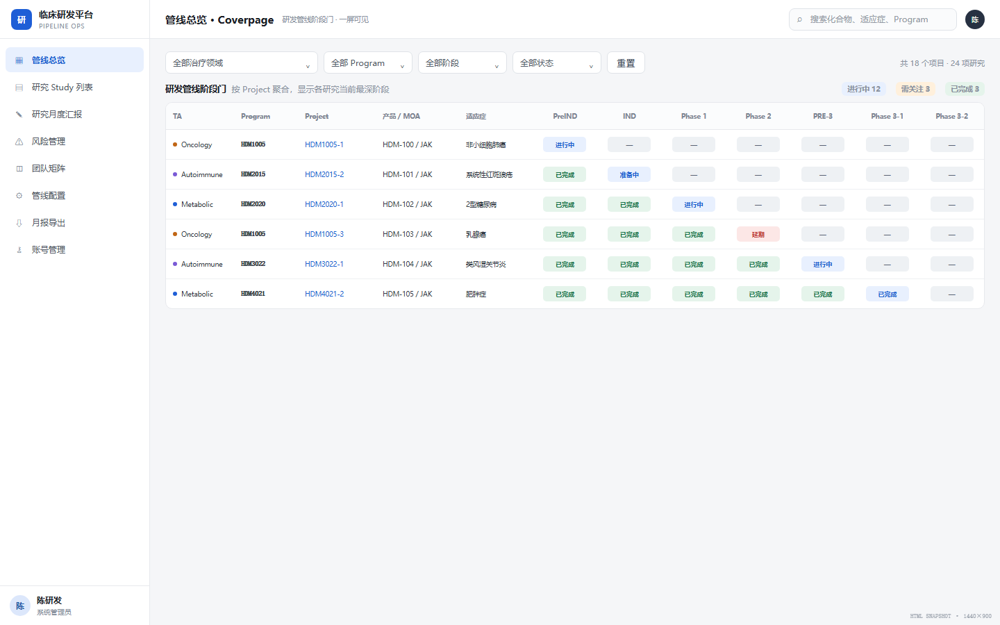
管线总览页面 页面功能与交互#
默认按TA分组，每个TA可展开/收起。 展示Project级管线结果。 支持TA、Program、阶段、状态筛选，以及“需关注、已获批、本月有更新”快捷筛选。 点击Project基础信息打开Study集合面板；点击阶段单元格进入映射的Study详情。 悬停阶段状态展示阶段、状态、负责人、更新时间及回填说明。 管理员可拖拽调整TA内Project顺序。 展示字段#
字段 来源 类型 展示/计算逻辑 枚举 TA分组 Study.ta Enum 按TA分组，数量为分组内去重Project数 见6.1 Project行 Study.project Derived/Reference 以Project ID为行主键；先筛选授权范围内Study，再按Project去重聚合；同一Project至少一个Study命中时展示一行 - Product Study.compound String 取Project下首个Study产品名；同一Project存在不同Product时标记数据异常，不静默覆盖 - 来源/国内外 Config.source/origin Enum 以“来源 · 国内外”显示 见6.2 Program (MOA) Study.program/modality String 主行显示Program/产品，副行显示MOA或剂型 - Project (Indication) Study.project/indication String Project去重；多个适应症以 / 拼接 - PL头像 Team.PL Derived Project下PL去重；多人显示 +N - 本月更新点 Study.updatedAt、Milestone.updatedAt、MonthlyReport.updatedAt Derived Boolean Project下任一Study的基础信息、阶段状态、里程碑或月度汇报更新时间落在当前自然月内则为true并显示蓝点；现有HTML暂以 upd=true 代替 true/false 阶段状态 Config.phaseStatus、Milestone Derived 每个Study先由Phase Status映射到PreIND至Phase 3-2中的一列；当前阶段显示当前节点；当前阶段以前若无实际阶段项目则回填“已完成”并显示“实际无项目，由后续阶段回填”；PreIND/IND优先依据对应里程碑实际开始/结束日期推导节点；“未开始”和“不适用”不视为已进入该阶段 见6.3、6.4 阶段筛选命中 阶段状态 Derived Boolean 所选阶段对应单元格不是“未开始”且不是“不适用”时为true；先按Study判断，再由Project行汇总为“任一Study命中即命中” true/false 状态筛选命中 阶段状态 Derived Boolean Study任一阶段单元格与所选状态完全相同时为true；Project下任一Study为true则保留Project行 true/false 项目状态 Study、Risk、Milestone Derived/Enum 不落库、不配置；根据Project下属Study的阶段、里程碑和风险数据实时汇总计算，具体优先级由Java统一实现 进行中、已完成、准备中、延期 Open风险数 Risk.status Derived Integer 统计Project下全部授权Study关联且 status=Open 的Risk记录数；同一Risk ID只计1次 非负整数 需关注数 阶段状态 Derived Integer 先判断Study任一阶段是否为橙色状态“已反馈、补正中、已发补、已书补”或红色状态“逾期、风险”，再按Project ID去重计数；该数不等于Risk记录数 非负整数 已获批数 阶段状态 Derived Integer Study任一阶段状态精确等于“已批准”即命中，再按Project ID去重计数；Close、DBL、CSR不计入已获批 非负整数 本月有更新数 本月更新点 Derived Integer 统计本月更新点为true的Project数，按Project ID去重 非负整数 筛选结果数 Project行 Derived Integer 对同时满足搜索、TA、Program、阶段、状态和快捷筛选条件的Project ID去重计数 非负整数
4.2 Study列表#
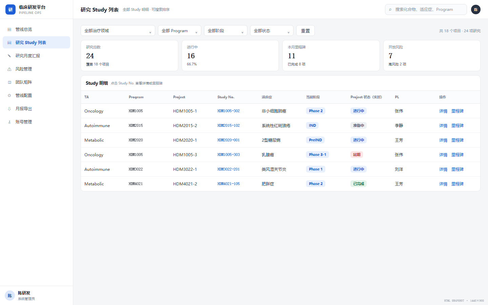
Study列表页面 页面功能与交互#
展示授权范围内全部Study明细。 支持全局搜索、四类筛选和表头排序。 点击行打开Study详情抽屉；点击“里程碑”进入里程碑页。 Study编号旁展示Open风险数量。 字段 来源 类型 逻辑 枚举 TA Study.ta Enum 转换为中文治疗领域 见6.1 Program Study.program Reference/String 原值展示 - Compound Study.compound String 原值展示 - Indication Study.indication String 适应症 - Study No. Study.study String Study业务编号；旁附Open风险数，数量为该Study关联且 status=Open 的Risk ID去重计数 - 当前阶段 Milestone group Derived 根据Study已到达的最深阶段或配置的Phase Status映射里程碑阶段组 PreIND、IND、Protocol等 状态 Milestone Derived 在当前阶段组内，从前到后读取节点：存在Actual Start且无Actual End时显示该节点；存在Actual End且不是最后节点时显示下一节点；最后节点存在Actual End时显示“已完成”；均无实际日期时显示组内首节点 见6.4 PL / PM Team.PL/PM Derived PL / PM 拼接- 最近更新 Study.updatedAt、关联记录updatedAt Derived/DateTime 取Study基础信息、里程碑、月度汇报和风险记录中最大的 updatedAt；现状仅显示演示月 - 结果数量 Study.study Derived Integer 对当前权限范围内同时满足搜索、TA、Program、阶段和状态条件的Study ID去重计数 非负整数 操作 - Action 打开里程碑页 -
4.3 研究月度汇报#
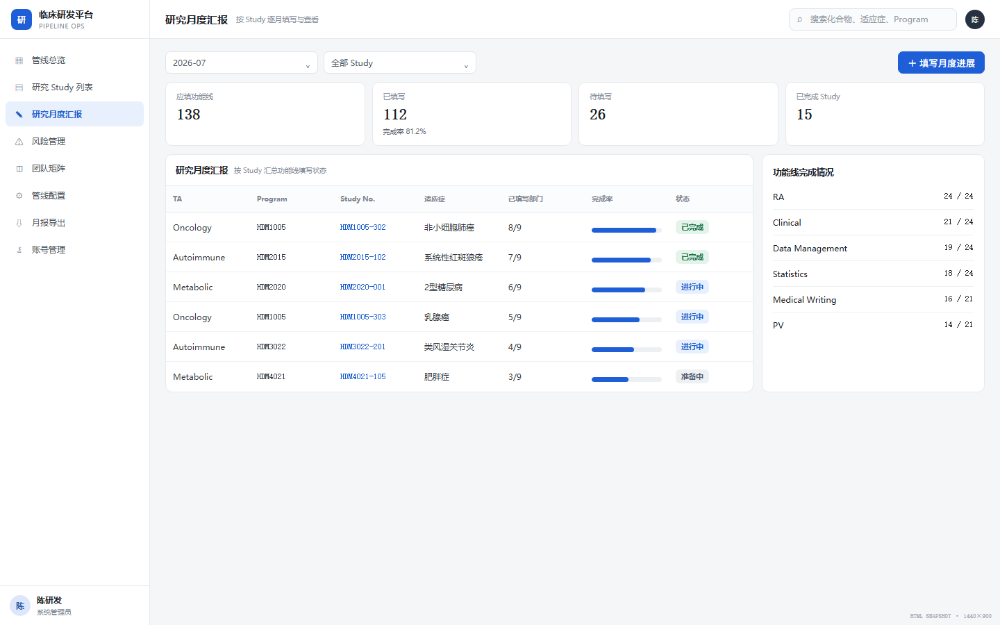
研究月度汇报页面 页面功能与交互#
列表模式：按月查看全部Study的已填写功能线数量和完成情况。 详情模式：查看选中Study各功能线本月填报、历史月份和完成率。 新增时选择功能线、月度并填写进展；编辑时功能线锁定。 用户仅能编辑自己可见Study中、团队角色所对应功能线的月报；新增、修改分别校验 monthly.create、monthly.update。 Study + 功能线 + 月度 对应一条月报应填项；一个月内每次汇报新增一条独立进展明细，不覆盖之前的汇报。月报不需要提交、审核、退回或批准流程。 列表字段#
字段 类型 逻辑 TA Enum Study所属治疗领域 Program String Study所属Program Compound String 产品/化合物 Indication String 适应症 Study No. String Study编号 应填功能线数 Derived Integer 统计团队矩阵中该Study已配置且在册的功能线去重数量 已填写部门 Derived Integer 在应填功能线中，统计所选月份月度进展文本去除首尾空格后非空的功能线数量 未填写功能线数 Derived Integer 应填功能线数 - 已填写部门，结果不得小于0Study完成率 Derived Percentage 已填写部门 ÷ 应填功能线数 × 100%，四舍五入取整数；应填功能线数为0时显示“—”，不参与整体完成率计算页面应填功能线数 Derived Integer 对当前权限范围内全部可见Study的应填功能线数求和 页面已填报数 Derived Integer 对当前权限范围内全部可见Study的已填写部门数求和 页面未填报数 Derived Integer 页面应填功能线数 - 页面已填报数页面完成率 Derived Percentage 页面已填报数 ÷ 页面应填功能线数 × 100%，四舍五入取整数；分母为0时显示“—”完整填报研究数 Derived Integer 统计 应填功能线数 > 0 且 已填写部门 = 应填功能线数 的Study ID去重数量
填报字段#
字段 类型 必填 逻辑 枚举 Study Reference 是 由详情页带入并锁定 授权Study 功能线 Enum 是 新增可选；编辑锁定；受权限过滤 见6.5 月度 Month/Enum 是 默认当前选择月份 系统月份列表 汇报日期 Date 是 默认当天；同月允许多次汇报 所选月度内日期 月度进展 Text 否 可换行；至少一条未删除且非空的进展明细时，该功能线计为已填写 -
4.4 风险管理#
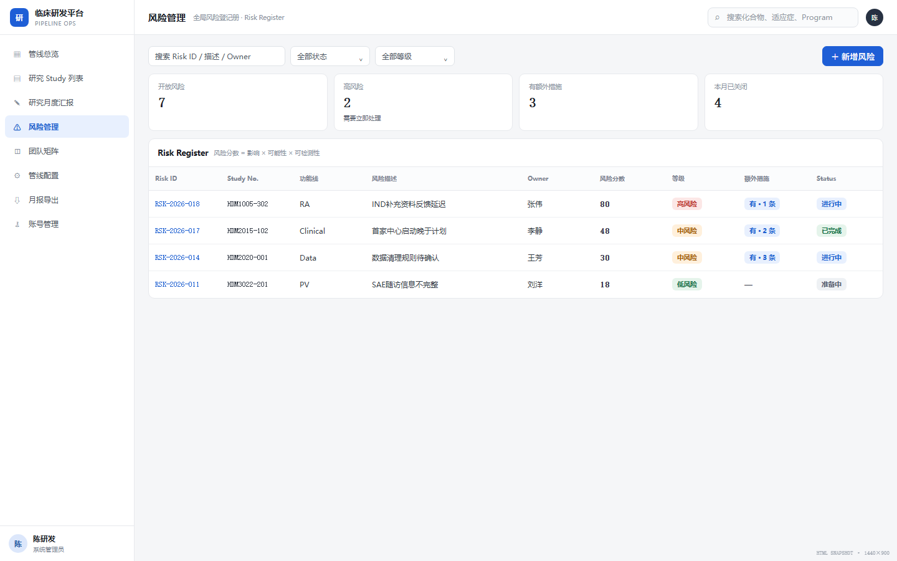
风险管理页面 页面功能与交互#
展示授权项目的风险登记册。 支持功能线、状态筛选；支持描述/Owner/编号/Program搜索；支持表头排序。 风险统计卡展示总数、Open、高危、中风险并可作为快捷筛选。 点击风险打开查看/编辑抽屉；有额外措施时显示“含N项措施记录”。 风险新增、编辑、删除分别校验 risk.create、risk.update、risk.delete，并校验目标Study属于当前用户可见范围。 列表字段#
字段 类型 逻辑 Study No. Reference 风险关联Study Program Reference 风险关联Program Project Derived 通过Program回查Project Risk ID String 新建时自动生成；建议后端生成唯一编号 风险描述 Text 必填；存在额外措施字段时附“含N项措施记录”标签，N的计算见“额外措施数量N”字段 功能线 Enum 风险归属部门/功能线 评分 Derived Integer 影响程度a × 发生可能性b × 可探测性c，范围1~125；任一因子为空时不计算并提示补全风险等级 Derived Enum 按风险总分计算：高危 ≥37；中风险 13~36；低风险 1~12 风险归属 Reference/String Owner，必填 状态 Enum Open或Closed 风险措施数量N Derived Integer 对该风险关联且未逻辑删除的措施记录ID去重计数 风险总数卡 Derived Integer 在当前权限范围、功能线筛选和文本搜索结果内，对Risk ID去重计数；不受状态和风险等级快捷筛选影响 未关闭Open卡 Derived Integer 在风险总数卡口径内，统计 status=Open 的Risk ID去重数量 高危卡 Derived Integer 在风险总数卡口径内，统计风险总分 ≥37 的Risk ID去重数量 中风险卡 Derived Integer 在风险总数卡口径内，统计风险总分为 13~36 的Risk ID去重数量
编辑字段#
字段 类型 必填 字段逻辑 枚举 风险编号 String 是 新建自动生成，编辑只读 - 登记日期 Date 否 新建默认当天 - Program Reference/Enum 是 仅展示用户被授权的数据范围 授权范围 功能线 Enum 是 仅可选用户被授权的功能线 见6.5 风险归属Owner String/Reference 是 保存校验非空 - 风险描述 Text 是 保存校验非空 - 影响程度a Integer/Enum 是 风险评分因子；与b、c相乘生成风险总分 1、2、3、4、5 发生可能性b Integer/Enum 是 风险评分因子；与a、c相乘生成风险总分 1、2、3、4、5 可探测性c Integer/Enum 是 风险评分因子；与a、b相乘生成风险总分 1、2、3、4、5 风险总分 Derived Integer - a × b × c，范围1~125；任一因子为空时不计算1~125 风险等级 Derived Enum - 根据风险总分计算：高危 ≥37；中风险 13~36；低风险 1~12；阈值正式上线前由业务确认并配置化、版本化 高危、中风险、低风险 状态 Enum 是 默认Open Open、Closed
风险措施字段#
一条风险可以有多条独立措施；每条措施单独保存描述、责任人、计划完成日期、实际完成日期、状态和备注。责任人必须是平台账号，并且是该Study的团队成员。
4.5 团队矩阵#
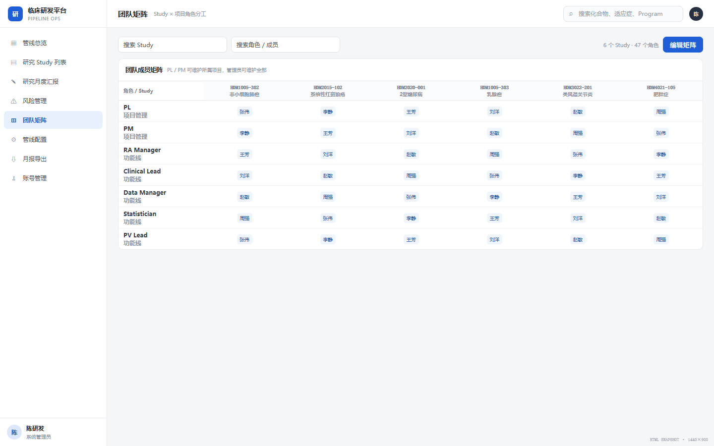
团队矩阵页面 页面功能与交互#
横向为Study，纵向为角色；顶部展示适应症和当前状态。 分别支持Study/适应症搜索和角色名称搜索。 拥有 team.edit_mode 和 team.update 权限，且目标Study属于用户可见范围时可进入编辑模式。 单元格支持从平台账号中搜索、添加和移除成员；数据库使用 user_id 关联，不保存姓名拼接字符串。 团队成员必须已有平台账号，不允许临时成员。 团队矩阵同时表达业务分工和 ASSIGNED_STUDY 用户的Study可见范围，不直接授予新增、修改、删除等操作权限。 字段 类型 逻辑 Study No. Reference 列头，唯一标识Study Indication Derived String Study适应症，只读 Status Derived Enum 当前活动里程碑，只读 Role Enum 纵向角色，见6.6 Members MultiReference/String[] 一个角色可多人；现状按“、”拆分 注册状态 Derived Boolean 姓名是否存在账号表 研究数 Derived Integer 横向Study搜索后，对当前权限范围内命中的Study ID去重计数 角色数 Derived Integer 纵向角色搜索后，对命中的团队角色编码去重计数
4.6 管线配置#
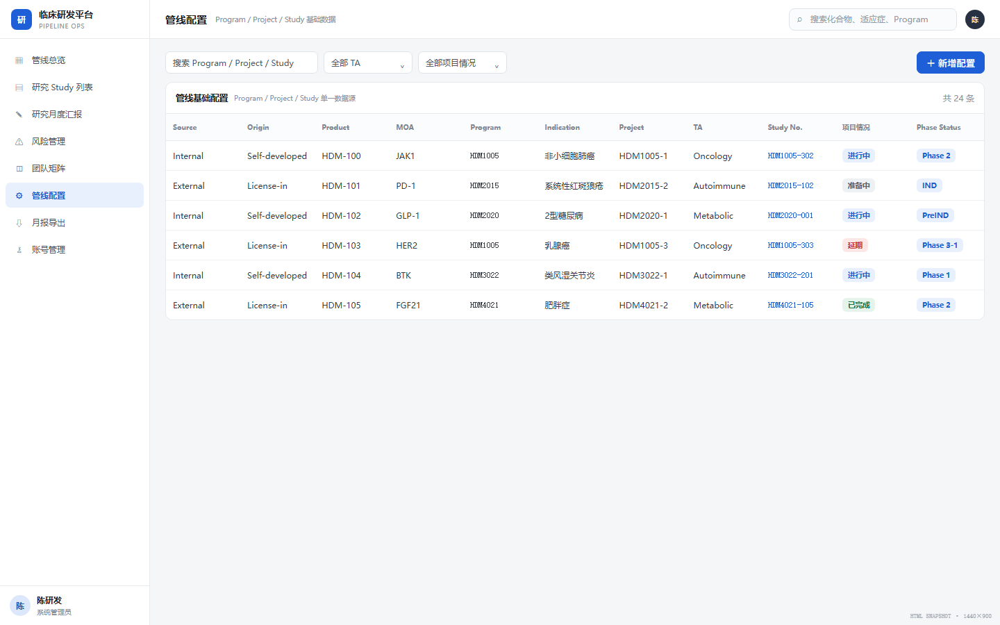
管线配置页面 页面功能与交互#
列表查看和排序Program/Project/Study基础数据。 新增、编辑、删除分别校验 config.create、config.update、config.delete；默认仅授予系统管理员角色。 保存后作为管线总览、Study列表和报告的基础数据来源。 字段 类型 必填 逻辑 枚举 Source 来源 Enum 否 默认自研 自研、引进、合作 Origin 国内外 Enum 否 默认国产 进口、国产 Product 产品 String 否 产品/化合物名称 - MOA 机制 String 否 作用机制 - Program 项目集 String 是 保存必填 - Project 项目 String 否 同一Program可多个Project - Indication 适应症 String 否 - - TA Enum 否 治疗领域 见6.1 Study 研究 String 是 保存必填 - 业务编码 String 是 Program、Project、Study分别使用全局唯一且创建后不可修改的业务编码；数据库内部使用BIGINT主键关联 - 项目状态 Derived Enum - 不在管线配置中填写；根据Project下属Study状态实时计算并决定状态色 进行中、已完成、准备中、延期 Phase Status Enum 否 决定Study映射到管线哪个阶段列 PreIND、IND、Phase 1、Phase 2、PRE-3、Phase 3-1、Phase 3-2
4.7 月报导出#
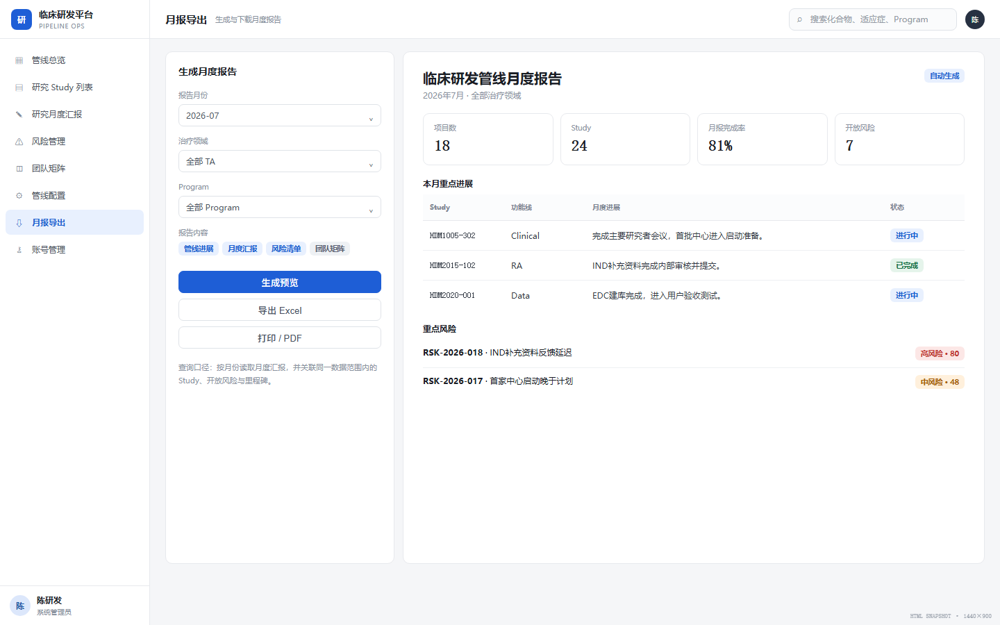
月报导出页面 页面功能与查询逻辑#
选择报告月度后即时重建预览。 查询范围由 report.page.view、report.export.*、study.read 以及用户的数据范围共同决定。 月报由Study基础数据、项目状态、所选月度进展和授权范围内风险合并生成。 支持全量Excel、进展CSV、打印/PDF、HTML报告下载。 报告结构与字段#
分区 字段 逻辑 管线概览 Study总数 对当前权限范围内的Study ID去重计数 管线概览 进行中Study数 根据Study所属Project的实时计算状态，统计状态为“进行中”的可见Study ID去重数量 管线概览 已完成Study数 根据Study所属Project的实时计算状态，统计状态为“已完成”的可见Study ID去重数量 管线概览 准备中Study数 根据Study所属Project的实时计算状态，统计状态为“准备中”的可见Study ID去重数量 管线概览 延期Study数 根据Study所属Project的实时计算状态，统计状态为“延期”的可见Study ID去重数量 管线概览 Open风险数 统计与可见Study关联且 status=Open 的Risk ID去重数量 管线概览 有填报Study数 在所选月度内，至少一个在册功能线的月度进展文本去除首尾空格后非空的Study ID去重数量 管线快照 TA、Program、Compound、Study、适应症、当前阶段、项目状态 Study级明细，按TA分组 本月进展 Study、Program、TA、功能线代码、功能线名称、进展文本 仅输出所选月度非空进展 Open风险 Risk ID、Program、风险描述、总分、Owner 仅输出Open风险
导出格式#
操作 类型 数据范围 全量数据 Excel .xlsx管线配置、Study、月度进展、风险、团队矩阵等多个工作表 导出进展 CSV .csv UTF-8 BOM每个Study×功能线一行；无填报的Study仍输出空进展行 打印/PDF 浏览器打印 当前报告预览区域 下载报告 HTML .html独立、可打开的静态报告
4.8 账号管理#
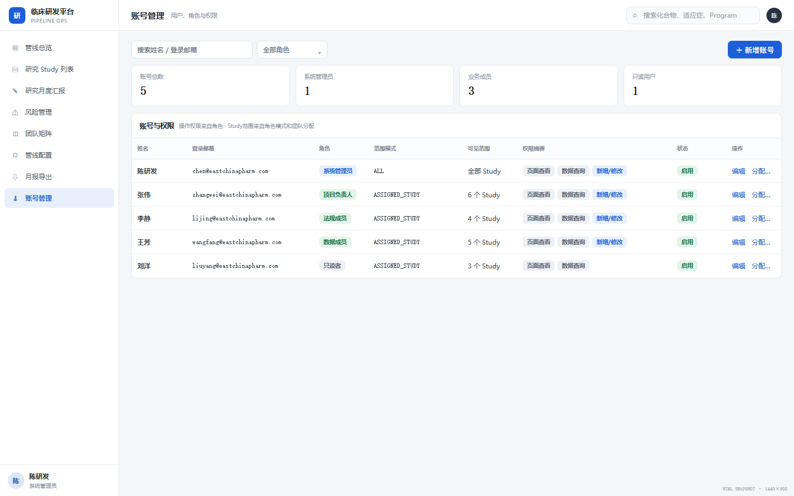
账号与权限管理页面 页面功能与交互#
需要 account.page.view 权限；新增、编辑和停用账号分别独立授权。默认仅系统管理员角色拥有。 查看、新增、编辑、删除账号；当前账号显示“当前”。 支持角色管理：创建角色、配置角色权限、停用角色、查看角色下用户。 支持用户授权：管理员为用户分配一个或多个角色；不支持用户单独追加或禁用权限。 权限配置采用树形结构：模块 → 页面查看/页面操作/数据CRUD。 已有账号的登录邮箱锁定；显示姓名、角色、账号状态和密码可编辑。 不能删除当前账号；不能删除最后一个具有权限管理能力的管理员账号。 不提供页面整库JSON导入或覆盖；数据库备份与恢复由运维流程完成。 字段 类型 必填 逻辑 枚举 姓名 String 是 用于展示，不作为关联键或唯一标识 - 登录账号 Email/String 是 转小写；新增时唯一；编辑锁定 合法邮箱格式 角色 MultiReference/Enum 是 由管理员分配一个或多个角色；角色提供标准权限模板 系统角色及自定义角色 密码 Password/String 是 仅提交明文到安全边界；数据库只保存Argon2id密码哈希 - 最终权限 Derived Permission[] - 当前用户全部启用角色所关联权限编码的并集 - 数据范围摘要 Derived String - ALL显示全部Study；ASSIGNED_STUDY按团队分配统计可见Study数量-
角色配置字段#
字段 类型 必填 逻辑 角色名称 String 是 系统内唯一 角色说明 String/Text 否 描述适用人群和职责 状态 Enum 是 启用、停用；停用后不再向用户提供权限 角色权限 Permission[] 是 按页面、操作、CRUD勾选 数据范围模式 Enum 是 ALL或ASSIGNED_STUDY
用户授权交互#
管理员进入账号详情，选择“权限配置”。 选择一个或多个角色，页面即时展示角色带来的权限。 保存前展示角色权限并集和角色数据范围模式。 保存后权限立即生效；若修改当前登录用户自身角色，刷新当前会话菜单和按钮。 权限配置字段#
字段 类型 必填 示例/逻辑 模块 Enum 是 pipeline、study、monthly、risk、team、config、report、account、milestone 权限编码 String/Enum 是 risk.page.view、risk.create、report.export.xlsx权限名称 String 是 风险页面查看、风险新增、导出Excel 授权来源 Derived Enum - 角色
> 安全要求：正式产品不得在浏览器、导出或日志中保存明文密码或密码哈希，应采用服务端认证、加盐哈希、复杂度策略、重置流程、登录失败限制和审计日志。
4.9 里程碑#
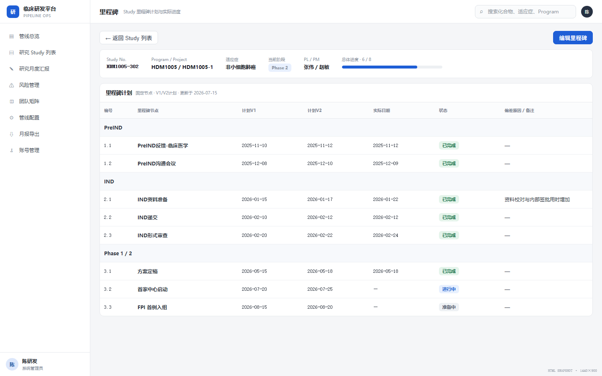
里程碑页面 页面功能与交互#
从Study列表进入，只展示一个Study的里程碑。 按Java固定的阶段和里程碑节点顺序展示；数据库不建立阶段或节点配置表。 拥有 milestone.update 且数据范围覆盖目标Study的用户可编辑；其他用户只读。 编辑状态下可维护计划V1.0、计划V2.0、实际开始、实际结束和偏差说明。 字段 类型 逻辑 阶段组 Enum PreIND、IND、Pre3、Protocol、SSU、Enrollment、IA、Data & Report、PreNDA/BLA、NDA/BLA Milestone Enum/String 系统预置节点名称 Ver 1.0 Date 第一版计划日期 Ver 2.0 Date 第二版计划日期 Actual Start Date 实际开始日期 Actual End Date 实际结束日期 节点状态 Derived Enum Actual Start和Actual End均为空时为“未开始”；Actual Start非空且Actual End为空时为“进行中”；Actual End非空时该节点为“已完成”，若不是阶段组最后节点则活动节点顺延到下一节点；阶段组最后节点已完成时阶段组显示“已完成” Note String/Text 延迟或提前原因
五、关键交互流程#
5.1 用户操作用例图#
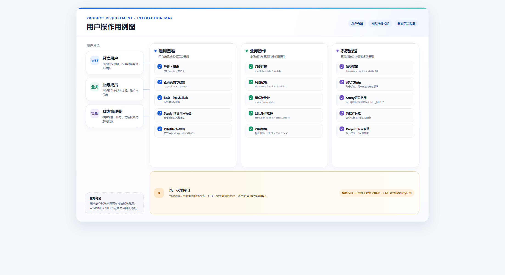
用户操作用例图 可编辑图稿源文件：diagram-source.html
说明：系统管理员是系统预置的角色权限模板，不代表绕过鉴权。若管理员角色中的某项权限被禁用，或数据范围不覆盖目标数据，同样不得执行对应用例。
5.2 功能验收脑图#
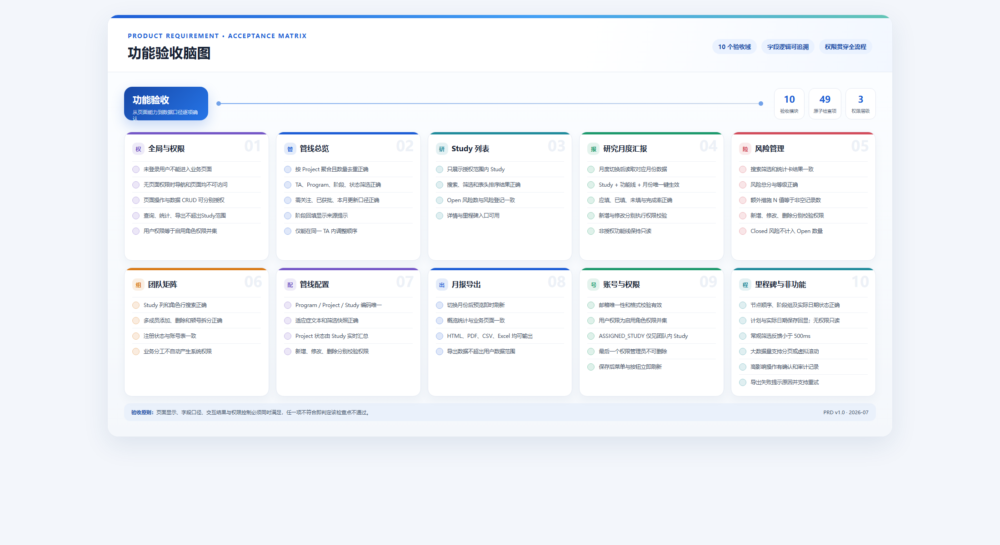
功能验收脑图 可编辑图稿源文件：diagram-source.html
5.3 月度填报到报告#
选择Study和月份 → 系统读取团队矩阵
系统读取团队矩阵 → 过滤可编辑功能线
过滤可编辑功能线 → 填写月度进展
填写月度进展 → 保存Study+功能线+月份
保存Study+功能线+月份 → 刷新月度汇报状态
保存Study+功能线+月份 → 月报导出按月份查询
5.4 风险管理#
01 新建风险
→ 02 选择授权Program和功能线
→ 03 填写描述与Owner
→ 04 填写a、b、c
→ 05 刷新风险评分与等级
→ 06 补充控制措施
→ 07 Open跟踪
→ 08 再评估或Closed
六、枚举字典#
6.1 TA#
肿瘤、自身免疫、代谢与心血管、神经与精神、罕见病、感染
6.2 来源与国内外#
Source：自研、引进、合作 Origin：进口、国产 6.3 管线阶段与项目状态#
Phase Status：PreIND、IND、Phase 1、Phase 2、PRE-3、Phase 3-1、Phase 3-2 Project状态计算结果：进行中、已完成、准备中、延期；不落库，由下属Study状态实时汇总。 阶段状态筛选：已递交、已受理、已反馈、补正中、已发补、已书补、已批准、FPI、LPI、LPO、DBL、CSR、Close、逾期 6.4 里程碑组#
PreIND：递交及临床医学、数统、临床药理、非临床、药学反馈。 IND：递交、形审发补、形审补正、受理、获批。 Protocol：方案摘要定稿、方案讨论会、方案定稿。 SSU：立项、伦理、合同、中心启动、人遗、CDE/ClinicalTrial登记。 Enrollment：FPI、LPI、LPO。 IA：数据冻结、数据分析。 Data & Report：DBL、TLR、TFL、CSR、中心关闭。 PreNDA/BLA、NDA/BLA：上市申请前沟通及上市申请递交、核查、发补、获批。 6.5 功能线#
Code 名称 Code 名称 PM 项目管理 RA 注册 CM 临床医学 CP 临床药理 PV 药物警戒 TM 试验管理 CO 临床运营 Lab 中心实验室 Supply 供应保障 CTA 临床试验协调 ST 生物统计 PG 统计编程 DM 数据管理 MW 医学写作 NC 非临床 CMC 药学CMC IP 药品管理
6.6 团队角色#
PL、APL、PM、APM、RA Sponsor、RA Manager、RA Specialist、RA CMC、CM Sponsor、CM、CP Sponsor、CP、PV Sponsor、PVP、PVO、TM Sponsor、TM、CO Sponsor、CTM、ACTM、Lab、Lab backup、Supply、Supply backup、CTA process、CTA TMF、ST Sponsor、ST、PG Sponsor、PG、DM Sponsor、DM、MW、NC-contact、NC-PK、NC-PD、NC-TOX、CMC-PL、CMC-PM、CMC-DS、CMC-DP、CMC-OA、CMC-RA、IP。
6.7 风险#
状态：Open、Closed 评分因子：1、2、3、4、5 风险等级：低风险、中风险、高危 6.8 账号角色#
系统可预置 系统管理员、普通成员、只读者 三类角色，也允许管理员创建自定义角色。角色本身不写死业务逻辑，实际能力以角色关联的权限编码为准。
6.9 权限动作枚举#
页面：view 页面操作：export、print、edit_mode 数据动作：read、create、update、delete 角色数据范围模式：ALL、ASSIGNED_STUDY 七、数据与非功能要求#
7.1 数据约束#
Program、Project、Study应使用独立ID，不以名称或拼接字符串作为永久主键。 Study No.在有效数据集中唯一。 风险必须关联Study和功能线。 月报应填项唯一键：studyId + functionLineId + reportMonth；一个应填项可关联多条进展明细。 团队指派唯一键：studyId + roleCode + userId。 所有新增、修改、删除操作记录操作者和时间。 7.2 安全与合规#
生产环境使用后端数据库和统一身份认证，不依赖localStorage。 密码不得明文存储或导出。 页面、操作、数据CRUD及Study可见范围必须在服务端校验，前端隐藏按钮不能作为安全边界。 角色配置、用户角色变更和团队分配变更必须写入权限审计日志，记录管理员、变更前后值和时间。 删除、关闭风险等高影响操作需要确认和审计日志。 若系统用于受监管的GxP活动，需要进一步评估电子记录、审计追踪、验证和数据完整性要求。 7.3 性能与可用性#
列表筛选反馈目标小于500ms。 1000条Study、10000条风险下支持分页或虚拟滚动。 导出过程中显示进度，失败提供明确原因并允许重试。 表单离开前对未保存内容进行提示。 八、埋点与验证计划#
事件 触发 属性 page_view 进入页面 page、role、scope_count filter_change 修改筛选 page、filter_name、filter_value、result_count study_open 打开Study详情 study_id、entry_page monthly_save 保存月度进展 study_id、month、function_code、is_new risk_save 保存风险 risk_id、study_id、score、status report_export 点击导出 month、format、study_count、success permission_denied 越权操作被拦截 action、object_type、object_id、role
验收重点：聚合口径正确；无页面权限时不可进入；页面操作和数据增删改查可分别授权；ASSIGNED_STUDY用户只能访问团队分配的Study；角色权限并集正确；风险评分正确；措施N值口径明确；报告数据与页面一致；实时导出不超出数据范围。
九、现状问题与产品决策清单#
编号 现状问题 建议产品决策 D-01 现状仅使用Admin/Member/Viewer粗粒度角色 改为角色权限模板；用户操作权限只来自角色权限并集 D-02 复杂数据范围配置容易与团队分工不一致 角色范围仅保留ALL/ASSIGNED_STUDY；后者以团队分配作为Study可见范围 D-03 现状根据团队矩阵姓名自动推导权限 团队分配改用userId关联，既表达业务分工也决定ASSIGNED_STUDY可见范围；姓名仅展示 D-04 风险措施使用多个扁平字段保存，无法表达多条独立措施 建立一对多措施子表，字段与迁移口径见4.4 D-05 密码明文保存和备份 接入服务端认证，禁止导出密码 D-06 风险等级规则硬编码在前端 由业务确认后配置化并版本管理，字段口径见4.4 D-07 管线阶段回填来源不透明 保留回填提示，并允许业务标记“不适用”，字段口径见4.1 D-08 最近更新时间为演示值 使用真实更新时间和更新人 D-09 删除缺少确认，导入校验较弱 增加确认、逐字段校验、回滚和审计
十、HTML页面截图说明#
截图源文件：html-screenshot-source.html 。通过查询参数 page 切换页面，例如 ?page=risk。 截图基准：1440×900，左侧导航216px，顶部栏56px，内容区域使用桌面端表格布局。 截图已分别放置在第四章对应页面需求的开头，用于页面布局、交互入口和字段呈现对齐；字段真源、计算和权限规则以本PRD为准。 {kind=link}
{kind=link}
{kind=link}
{kind=link}
{kind=link}
{kind=link}
{kind=link}
{kind=link}
{kind=link}